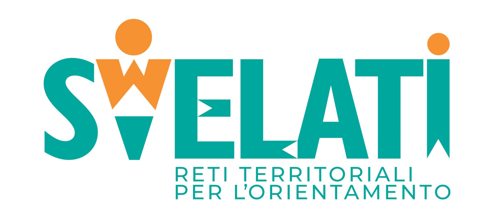

Il progetto dell'anno
Durante il mio percorso scolastico, la mia classe ha collaborato con la classe 5AM alla ristrutturazione del sito web 3elleorienta dedicato alla gestione delle attività di orientamento territoriale. Il progetto aveva l’obiettivo di digitalizzare e rendere più efficiente l’organizzazione delle attività tra scuole, studenti e amministrazione.
All’interno del lavoro di gruppo, il mio team si è occupato principalmente dello sviluppo del backend, in particolare della gestione delle funzionalità relative alle scuole, sia dal lato amministrativo che dal lato utente scolastico. Questo è stato realizzato attraverso la creazione e gestione di diverse pagine in PHP, con attenzione alla logica dei dati, alla sicurezza degli accessi e alla corretta interazione tra le varie sezioni del sistema.
Il progetto è stato svolto anche grazie al supporto e alla guida dei docenti M. Ricci e A. Bracaccini, che hanno contribuito con indicazioni tecniche e organizzative fondamentali per lo sviluppo del lavoro.
Questa esperienza ha rappresentato un’importante occasione di crescita, permettendomi di lavorare in team, affrontare problematiche reali di sviluppo web e approfondire le competenze nel campo della programmazione backend.
